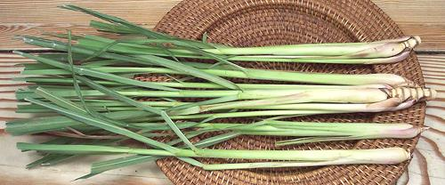

Lemongrass

[Fever Grass, Lemon Grass;
Ta Khrai, Takrai (Thai); Xa, Sa chanh (Viet); Tanglad (Philippines);
Zabalin (Burma); Si khai, Sing khai (Laos); Bai mak nao, Slek krey
sabou, Kuel skey (Cambodia); Sera (Sri Lanka, India); Ghanda,
Bhustrina (India); Serai (Malaysia); Sereh (Indonesia); Citronella
(French); Cymbopogon citratus and to a lesser extent other
Cymbopogon species]
Lemon scented grasses native to Southeast Asia. C. citratus is
essential to the cuisines of all of Southeast Asia, including the
Philippines. It is also used in Sri Lanka, parts of southern China,
and in the Caribbean, but is not used in cooking in India.
C. flexuosus, intensively grown in India, is mostly used for
oils, perfumes and medicinals, though it can be used in cooking.
C. nardus is the industrial strength version, unpalatable
to both people and livestock, but distilled into citronella oils used
as insect repellents, antiseptics and flavorings. It is grown as a
decorative in Florida and California but is a serious and difficult
to defeat invader of pasture land in Africa.
More on Grasses & Grains.
Buying:
Nearly every Asian market in Southern
California that serves a Southeast Asian community now stocks fresh
lemongrass - and even some of the Korean markets have it. It may be
harder to find in other regions. Lemongrass is used in parts of
southern China but traditional Chinese markets may not have it. It is
used in Burma but not significantly in India. Lemongrass stalks are
generally made up into small bunches of 4 to 6 and sold by the bunch.
Some Asian markets will have packages of pre-chopped lemongrass in the
frozen food cases. This is not quite as good as fresh but it is usable in
recipes. Dry powdered lemongrass can sometimes be found but it's really
hardly worth using - the flavor and aroma are pretty much gone.
Storing:
Stalks can be trimmed somewhat at the top, if
necessary, and stored refrigerated loosely wrapped in plastic. They will
last 2 to 4 weeks depending on original condition, but will gradually
darken.
Preparing:
Lemongrass is very tough, even the white inner
leaves which we use, and does not soften during cooking. It is, therefore,
used only whole, cut into lengths (usually removed before serving), or
chopped very fine and preferably then smashed in a mortar.
To use whole, strip off the tough outer leaves, cut the hard root back
until you see purple rings. Smash moderately with your kitchen mallet (a
plug of root is likely to pop out), then cut the bottom end into two
3 inch lengths, discarding the top.
To chop, prepare as for using whole except don't cut off the top.
Smash well with your kitchen mallet, then cut crosswise as thin as you
can, and finally chop. Use about the bottom 4 to 5 inches and discard
the tops. For some applications (particularly curry pastes) you'll want
to pound the finely chopped lemongrass to a paste in a big stone mortar.
Cooking:
Lemongrass is generally used in wet cooking where
it should go in with the liquid so it has maximum time for the flavor to
infuse the liquid. It is also used in marinades.
Subst:
Use zest (yellow only) of a small lemon per stalk
of lemongrass. Not quite the same, but something reasonably similar.
gr_lemonz 090507 - www.clovegarden.com
©Andrew Grygus - agryg@clovegarden.com - Photos
on this page not otherwise credited © cg1
- Linking to and non-commercial use of this page permitted